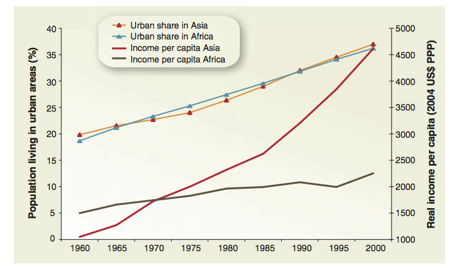

严肃写作前先来个学术段子：
经济学家从错误的假设中正确地推理；而社会学家却从正确的假设中错误地推理。因此，他们成了两个无知的互补体。（邓肯致谢宇，2003年6月28日）
想写这么个博文是因为看到知乎日报一篇文章：反驳一个常见的说法：放开户籍，全国人民都要来北上广，文章引发了广泛的讨论，但都不在点儿上，具体针对这个问题的讨论又会过于“狭窄”，所以才想到这么一个题目。但显然，“定量研究”这个大题目不是我能驾驭的，只能想到什么说什么。我的观点是：数据不是万能的，但没有数据也是不行的；定量研究问题多多，但目前的情况下还没有比它更好的方法。
定性or定量
所有研究都在用定性，也都在用定量，只是侧重程度不同，两者无法割裂，无法对立。当我们计算城市与农村的受教育程度差异时，首分要对两者进行分类，分别定义，这本身是定性分析，只有对“城市”、”农村”、”受教育程度”几个词的定义和测试指标有共识才能进行下一步研究。而最简单的定性研究也少不了用数据统计佐证，比如研究一个村子，村子多少人，男女比例，人口结构都是定量分析。如果缺少必要的量化指标，定性研究很难进行对比研究，缺乏可信性。
但现在定量研究问题也很多，很多人把定量研究仅仅是当成拿几个常用的公式、模型，套套数据，软件做做分析得出些结论，这种认识很片面，也造成了大量灌水文章的出现。真正好的定量研究有三点，1是把研究对象概念化（conceptualization），把要研究的问题想清楚，这是理论上的发展；2是研究设计，只有想清楚了研究问题才能提出一个模型与要研究的问题想结合；3是数据分析得到研究结果。其中第1部分最重要，但一个好的定量分析需要在三个方面很紧凑(tight)，问题的提出和概念化、研究设计、分析结果之间一环扣一环，让人信服。（谢宇，2012）
异质性
经济学中对异质性的讨论比较少，但在社会学中这是个本质问题。不同个体间的行为和观点可以差异很大，社会学研究就是在这个差异中寻找规律。对物理学研究而言，差异是希望能被避免的测量误差，希望消除外界干扰（理想的球体，无限大平面等现实中根本不存在的东西）。但对社会学家来说，异质性却是社会现实的本质。物理学研究中将偏离平均值的偏差视为“误差”，认为只有平均值才接近真实原因。而社会学研究中，平均值只是总体的一种属性，变异则是另外一个同等重要的属性。“尽管统计学一度被视为‘关于平均数的科学’，但更好的做法是将其描述为‘关于差异的科学’。”（Duncan, 1984:224）
关于异质性，Duncan给过很精妙的解释。我改编一个更好理解的版本：我们假设要调查一个人对两种可乐（A和B，其中A用阴影表示，B用空白表示）的偏好。图1表示存在总体异质，每个人回答的方式是固定的，要么喜欢A要么喜欢B，喜欢A的人占7/12；图2是代表总体同质，某一群体中，所有个体都是概率性的，每个人的回答是随机的，喜欢A的答案概率是7/12。从统计结果上来看是一样的，但背后的机制有根本上的不同。实际上，我们很少见到两种极端情况，大多是混合数据，图3是康弗斯得到的两者混合，但Duncan认为应该有多种混合（图4），更多关于异质性的讨论可以看文后的参考文献1。
图1（左）：异质性群体； 图2（右）：同质但不确定性群体
图3（左）：三种类型的混合群体； 图4（右）：多种类型的混合群体
定量研究的一些问题
(1)忽略变量偏误
很多研究站不住脚的原因是，忽略了变量，引发了偏误（omitted-variable bias）。看个真实例子，有社会学家对美国佛州的300多个凶杀案进行了分析，想看看判刑上是否有种族歧视？是不是黑人更容易被判死刑？数据如下：
| 被告人种族 | 被判死刑 | 没有被判死刑 | 总计（个） | 死刑比率（%） |
|---|---|---|---|---|
| 白人 | 19 | 141 | 160 | 12 |
| 黑人 | 17 | 149 | 166 | 10 |
白人160个被告中19个判了死刑，比率为12%，黑人166个被告中17个判了死刑，比率为10%。是不是能得出结论：白人比黑人更容易被判死刑？
答案是不能，因为：被判死刑与被害人种族有关系，杀了白人更容易被判死刑，下表就能清楚看出这一关系。黑人杀白人，黑人杀黑人，都比对应的白人杀白人，白人杀黑人更容易被判死刑，白人杀黑人被判死刑的比率甚至为0！是不是有个疑问，为什么两个都高，加到一块后黑人被判的反而低了呢？因为白人杀白人占白人总杀人数的比率非常高，黑人杀黑人占黑人总杀人数的比率非常高，加权后就是这个结果。说的有点绕，可以好好琢磨琢磨数据就能明白。
| 被告人种族 | 被害人种族 | 被判死刑 | 没有被判死刑 | 死刑比率（%） |
|---|---|---|---|---|
| 白人 | 白人 | 19 | 132 | 12.6 |
| 黑人 | 0 | 9 | 0 | |
| 黑人 | 白人 | 11 | 52 | 17.5 |
| 黑人 | 6 | 97 | 5.8 |
(2)相同的数据，不同的假设，不同的结论
再来看一个例子。Acemoglu和Robinson（简称AR）写了本*Why Nations Fail*，讨论制度对经济增长的影响，Subramanian（简称S）与这两位老哥儿进行了争论（1）。

图片来源：参考资料2
横轴是民主指数，纵轴是国家经济发展情况（人均GDP），红色拟合直线是由144个国家的数据得到的民主与经济发展情况的关系，正的斜率代表民主与经济发展正相关，越民主的国家经济发展越好。S兄争论说，回归是按国家为单位的，一个国家不论大小权重是一样的。一般情况下以国家为单位可能没什么问题，但在本例中，中国的印度世界人口数最多的两个国家严重偏离了回归直线。如果按人口加权重新回归，得出的斜率是负的，但不显著，说明民主与经济增长的关系不好判断。同样一组数据，不同的假设可能得出完全不一样的结论，哪种更有效？
AR对此进行了反击，大意是说S拿中国和印度说事儿是有理由的，但是他说的太武断，我们没有说政治制度directly determine经济增长，我们说的是determine经济增长，对于中国和印度的问题，我们进行了很多讨论（2，3），blablabla：
Subramanian is certainly right to draw attention to China and India. But perhaps his review is too brief to have done justice to our theory and its implications on these topics — so much so that he actually omits any mention of the extensive discussion of China and extractive growth in the book.
First, our theory isn’t that political institutions directly determine economic prosperity. Rather, we claim that economic institutions determine economic prosperity, and explain why the link is between inclusive economic institutions and sustained economic growth — not necessarily short-run economic growth. We then argue that inclusive economic institutions can only survive in the long run if they are supported by inclusive political institutions.
让我们再往城市研究上靠一靠，还是一群经济学家，做过一篇叫Urbanization and the Wealth of Nations的论文，得出的结论是城市化并没有促进经济的增长，我没记错的话也是用的没加权的国家尺度数据：
urbanization are unlikely to speed up economic development. Even though …, the notion that a larger fraction of a country’s population living in urban areas improves economic performance does not seem to have empirical support. Policy-makers who hope to increase the long-term economic growth of their countries by supporting, or inhibiting, urbanization are likely to miss their target.

图片来源：Bloom et al. 2008. Urbanization and the Wealth of Nations. Science 319
定量研究即便在顶尖的学者那儿那有很多方法、假设上的争议，但这不并说明它没有用。恰恰想反，正因为定量研究更容易评判优劣，比起定性研究来更容易达成共识。“统计分析方法是统一的，彼此容易学习，而且统计研究方法发展很快，人们必须经常互相学习以掌握最新进展，学者之间交流很多，对研究做得出色和方法有创新的学者，大家都很服气。不像各自做自己个案研究，偏重定性研究的学者，由于互相的研究无法比较，相互之间交流较少也比较容易互不服气。”（参考文献1，p13）
最后回到知乎那篇文章，Power Law是有广义中心极限定理支持的，如果你能接受正态分布，也应该去试着理解幂律分布。
参考文献：
谢宇（2012）. 社会学方法与定量研究（第二版）. 社会科学文献出版社. http://www.economicthought.net/blog/?p=3066
http://whynationsfail.com/blog/2012/11/2/china-india-and-all-that.html